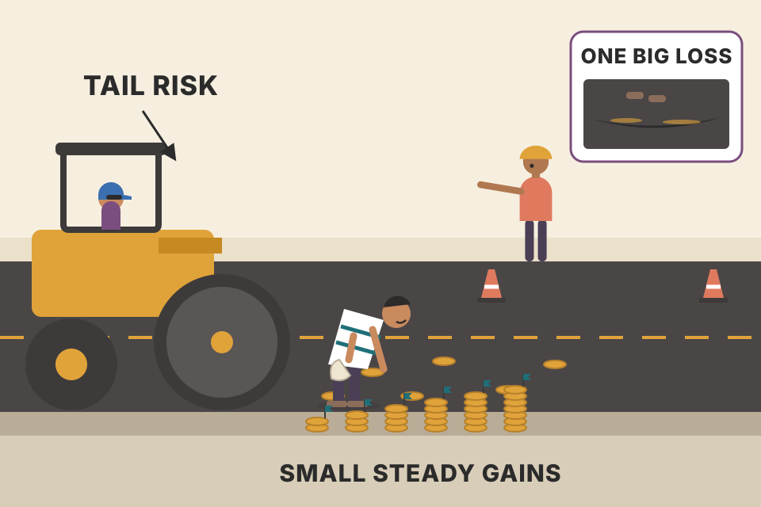
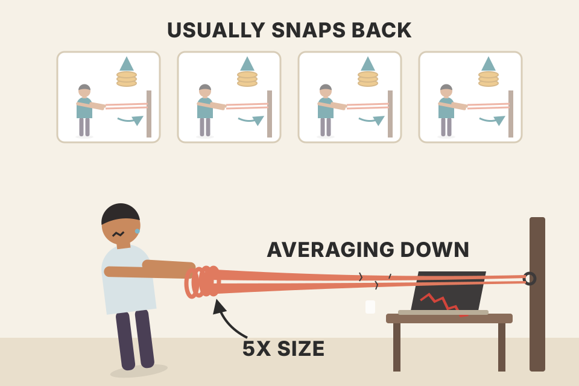
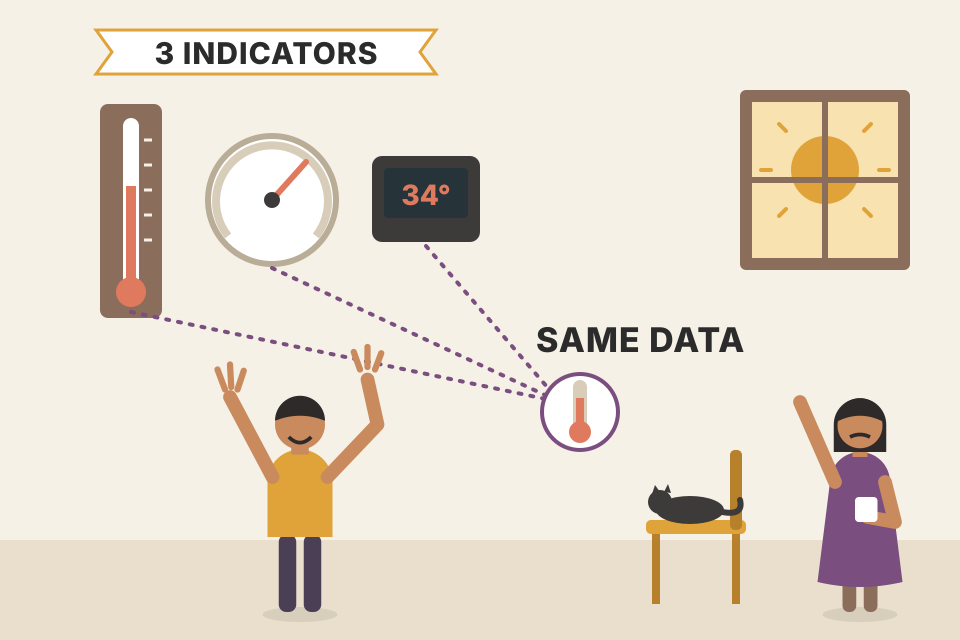
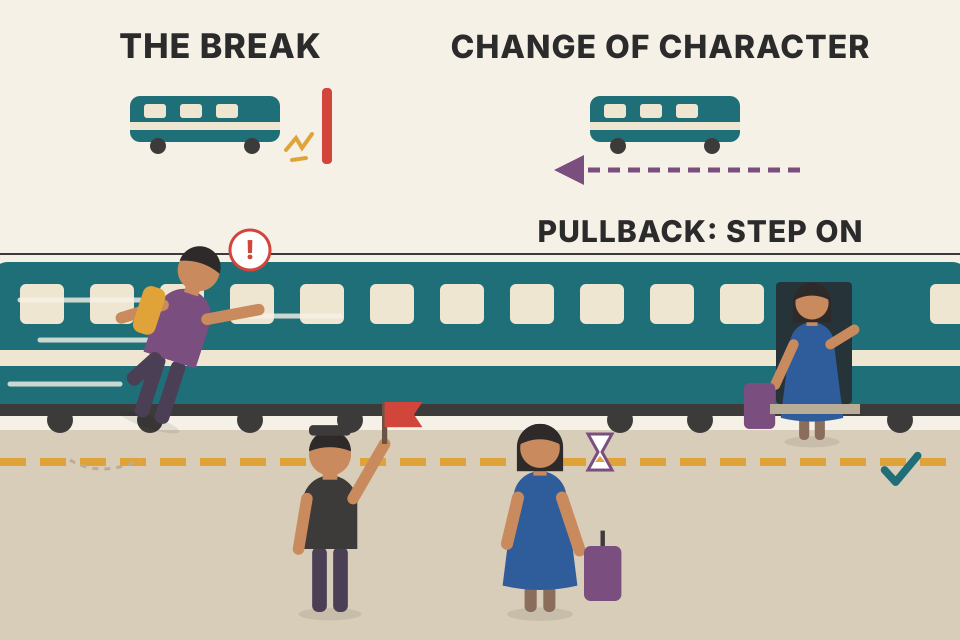

Module 8 is called "Pattern Failures", but its workbook pages are mostly about what surrounds every pattern: a plan you can test, how much to bet on each trade, which risks can end you, how much of any result is luck, how to keep discretion disciplined, and why calling tops and bottoms is so tempting and so costly. Every chart here uses simulated prices or simulated trades built to show one idea. None of it is real-market evidence.
The module has two halves. First come four projects you do yourself: revise your trading plan, start your own research, run a position-sizing simulation, and write down your beliefs. Then come readings: a pointer to the risk chapter of Grimes's 2012 book, and blog essays grouped under On Risk, On Trading Styles and On Reversals. The "pattern failure" theme itself is taught in the course material itself and in the earlier modules (failure tests in Module 6); these pages only introduce it. Read the map top to bottom: the projects build the trader, the essays describe the dangers.
Grimes calls this module a bring-it-all-together look at the patterns of the whole course (pullbacks, anti, failure tests, breakouts), with special attention to how those patterns fail. He names three uses of that study:
The module also covers position sizing. Trade too big and even a good system can blow up and take all your money; trade too small and nothing you do matters. You need to understand that trade-off for your own approach, and this module gives an exercise you can come back to as your trading grows (§04). It ends with thoughts on risk: it is no exaggeration, Grimes says, that trading is mostly about risk management, but only once the terms are defined. Finally, the module moves you further toward personal responsibility: fewer supplementary pages, because more of the work is yours. The hard work is yours, and so are the rewards.
A pullback buy is a bet that "the trend resumes". When price instead slices through the pullback low, the bet is wrong. The trend trader reads that as "get out now". The failure trader reads the same bar as "the people who bought are trapped; sell". One event, two jobs.
My illustration (not a chart from the book): simulated bars. The pullback and failure rules shown are the ones taught in this course's earlier modules; this page only uses them to show the two jobs.
A pattern is a bet that one group of traders will act a certain way. When the pattern fails, those traders are now on the wrong side, and their exits push price further against them. That is why the failure point is both the trend trader's natural stop (the reason for the trade is gone) and the failure trader's natural entry (the trapped traders are about to become sellers). The same idea powered the failure test in Module 6.
Your trading plan is a living document: you will revise it for years as your style grows. In this module, revisit it. If you skipped the plan work in Module 7, stop and do it now: without a solid plan, Grimes says, you are just guessing. What you need to do will differ for each trader, but at a bare minimum:
Writing a plan is a terribly unexciting topic, he admits, but it is one of the most important steps in a trader's development.
Shipping software: spec → unit tests → staging → production. Nobody deploys straight from an idea to prod. Backtest is your test suite, paper trading is staging, live is production, and every incident sends you back to edit the spec.
Each stage removes a different kind of self-deception. Writing the rules removes vagueness ("I'll buy strong pullbacks" is not a rule). The backtest removes the illusion that the idea works because you remember the good examples. Paper trading removes the gap between "I would have" and "I did" (you see fills, timing and your own hesitation). Only then does money test the last thing: you, under pressure.
Notes/trading/using_equations_to_trade.md lays out edge → backtest pass/fail → sizing → trade management → kill switch, and backtest_results_summary.md lists several ideas (5-min ORB, a 15-min sell setup) that are marked "paper trade only" because they passed the backtest stage but not more.By now you should have ideas you want to test. They don't need to be complicated or unique. You might revisit one of the pattern studies from earlier modules and change how the pattern is defined now that your plan has matured. Above all, look at your trading plan as a research subject. Ideas will also come from conversations with other traders and from books; all of it should flow into your research journal, which becomes a growing source of things to explore.
Tools, in Grimes's order: the bar-by-bar testing you have used all course still has its place (he recommends it even to his more quantitative students); you can also try other backtesting frameworks, simple Excel spreadsheets, or code in R or Python. Much of a trader's future work is testing and examining ideas. Begin, and keep good records of the results.
Bar-by-bar testing is replaying a match with the future covered by a card. You slide the card one bar to the right, decide, write the decision down, and only then look. You can't cheat with hindsight because you never saw the hindsight.
Simulated random-walk bars (no edge exists in them by construction). Outcome of each mark = close 10 bars later minus entry, in units of the 14-bar average range (ATR).
The replay forces two habits: you decide before you know, and you record every decision (not only the memorable ones). Those two habits are what make the later statistics honest. Code does the same thing faster and over thousands of cases, but it can't teach your eye what the pattern looks like as it forms, which is why Grimes keeps the manual version even for quantitative traders.
projects/trading-equation-backtests is exactly the "code it in Python" route; its summary (Notes/trading/backtest_results_summary.md) is my research record.Understanding the maths of sizing, drawdown and equity-curve volatility on paper is one thing; running it yourself teaches more. Grimes's procedure (spreadsheet or code):
His conclusion: with a positive edge there is truth in "risk more, make more", but the variability and the risk of ruin both grow as size grows.
Same dice, same rules, a hundred parallel lives. Bet small and the lives stay in a tight bundle drifting up. Bet big and the bundle explodes into a fan: a few lives get rich, many get poor, some hit zero and stop.
Each trade adds (win-size × p − loss-size × (1−p)) × risk on average: 0.05 × risk for the book's system. That average grows in proportion to size, but so does the spread: the standard deviation of one trade is about 1.05 × risk, so after 100 trades the expected gain is 5 × risk while one standard deviation is about 10.5 × risk. The noise is twice the signal even after 100 trades, which is why about 30% of runs lose money at small fixed sizes ($1,000–$5,000), and more once bankruptcies become common.
Fixed-dollar sizing can go bankrupt: a run of losses subtracts the same dollars from a shrinking account. Percent-of-balance sizing never mathematically reaches zero (each loss takes a fraction of what is left), but it can shrink an account to a fraction of itself, and because losses compound on a smaller base, a big percent size drags the median outcome down even when the average trade is positive.
| Trade | Result | Change | Balance |
|---|---|---|---|
| start | $100,000 | ||
| 1 | win | +1.1 × $1,000 = +$1,100 | $101,100 |
| 2 | loss | −1.0 × $1,000 = −$1,000 | $100,100 |
| 3 | loss | −$1,000 | $99,100 |
| 4 | win | +$1,100 | $100,200 |
Expected gain over 100 trades: 100 × (0.5 × 1,100 − 0.5 × 1,000) = $5,000. My own run of the procedure (20,000 simulated runs, not from the book) gives:
| Sizing | P(end below $100k) | P(bankrupt) | P(drawdown ≥ 50%) | Median end |
|---|---|---|---|---|
| fixed $1,000 | 31% | 0% | 0% | $105,000 |
| fixed $5,000 | 31% | 1.8% | 26% | $125,000 |
| fixed $10,000 | 34% | 19% | 62% | $150,000 |
| fixed $20,000 | 49% | 46% | 84% | $116,000 |
| 10% of balance | 54% | 0% | 86% | $95,100 |
| 20% of balance | 69% | 0% | ≈100% | $29,700 |
Notes/trading/trading_equations.md, which also explains why traders use ¼–½ Kelly.Notes/trading/using_equations_to_trade.md has my own sizing Monte Carlo on a 51.5% / 2R setup: at 1% risk, 0% chance of a ≥50% drawdown; at 6.8% risk (¼ Kelly), 39%; and 79% if the true win rate is really 45%. Same lesson as this project, plus one more: your edge is only an estimate.backtest_results_summary.md).Beliefs define much of who we are and drive behaviour, sometimes in ways we don't fully understand. The market is extremely challenging, and most of the obstacles in a trader's way are, to some extent, self-imposed: much of the work on trading is work on ourselves. The course has so far focused on the intellectual side (patterns, maths, building an approach); this exercise is the bridge to the work on yourself in Module 9.
The exercise: for several days, a few minutes a day, sit quietly and write down what you think your core beliefs are. A high-level view is enough. Don't judge them as good or bad (Grimes suggests "empowering" or "limiting" as better labels) and don't dig into where they came from. Suggested topics: yourself, health, career, the universe, family, relationships, money, success. Beliefs usually start "I am…", "People are…", "Life is…". Many are things you have never examined; you simply accept them as true. If you end with a handful of your most important beliefs on these or similar topics, the exercise is a success.
Beliefs are the default settings of your mind: nobody chose them, they shipped with the device, and they silently change behaviour. "Money is dangerous" might show up as cutting winners early; "I am someone who can't be wrong" as refusing to take a stop.
Under pressure people fall back on defaults, and beliefs are the defaults. Writing them down turns hidden rules into visible ones, which is the first step before you can question or change any of them. Doing it over several days matters: the first day's answers are the polite ones; later answers are closer to the truth.
The assigned reading is Grimes's 2012 book The Art and Science of Technical Analysis: Market Structure, Price Action, and Trading Strategies (Wiley), printed pages 263–290 (risk), followed by the blog essays below, grouped as On Risk (§07–§10), On Trading Styles (§11) and On Reversals (§12–§17).
books/trading/ holds this workbook, not the 2012 book, despite the PDF's file name). If I get it, pages 263–290 are the next read after this page.Trading is a risky business, and understanding your risks is the first step in managing them. Risk is counterintuitive here: in most of life we try to reduce it (fire, car crashes), but in trading we want risk, the right kinds, because risk and opportunity are locked together. There is no free lunch. The key is to take the right risks and know what they really are. Grimes sorts risks by consequence and probability:

Picking up coins in front of a steamroller. Every week you pick up a coin; the steamroller is slow and you've never been caught. The chart below is twenty such lives, simulated: smooth staircases up, and for the unlucky ones a single step down longer than all the stairs put together.
The chart's model is mine, not the book's: 20 independent lives, +1 unit of premium per week; in a crash week the short options go deep in the money and lose 1,500 units (so the expected value is negative). The 0.1%/week crash rate is an assumption chosen only to make "rare" concrete.
"Rare per week" is not rare per career. With a 0.1% weekly chance, the chance of at least one crash in 20 years (1,040 weeks) is 1 − 0.9991040 ≈ 65%. The strategy looks perfect in any short sample because the sample almost never contains the event that defines it. Its true expected value (magnitude × probability) can be near zero or negative while the visible track record is flawless.
Notes/trading/strategies_from_equations.md lists "selling options when IV > GARCH forecast", and using_equations_to_trade.md says option sellers earn premium on average but take rare large losses, so it needs strict sizing: exactly this quadrant.A stop-loss is a promise the market doesn't have to keep. You plan to lose 1% if price touches your stop; the market opens 8% lower and your order fills there. Key 2 is about the day the promise is broken; key 3 is about the small costs that are kept every single day.
Position size is computed as risk ÷ stop distance. A gap bigger than the stop distance multiplies the loss by gap ÷ stop distance. With a 3% stop and 1% planned risk, a 10% gap costs 3.3% of the account: the tighter the stop, the larger the position, and the worse the gap. The "middles" work the other way: no single cost hurts, but each trade pays it, so a 0.1R edge with 0.05R of costs and slippage keeps only half its profit, and with 0.1R of costs keeps none.
backtest_results_summary.md found most intraday ideas lost after FYERS charges + slippage; breakeven_move_fyers.md puts the break-even move at ~0.1–0.2% intraday and ~0.3–0.4% delivery. That is key 3 measured.Grimes's punchline: luck plays a large part. People selling investment tools are, in a sense, selling an illusion of certainty, whatever words they use (consistency, security, risk management), because humans naturally want safety and to know which actions lead to which results. His analogy: you know tonight's steak won't be identical to last week's (tougher, more marbling), but you don't expect a small asteroid to destroy your town while it sears. Surprises of that scale happen in markets more often than we admit.
Randomness hurts in two ways. Objectively, it makes results highly variable even when you do everything right. Subjectively, our intuition for it is poor: most of what we see in a market most of the time is meaningless noise, and our brains, superb pattern finders, find patterns even where none exist. He poses four questions (answer before opening them):
Only 23 (50.7%); 22 people give 47.6%. Most people guess around 180. Use the slider to see how fast it climbs.
A bad chance: about 0.08% (≈ √(2 / (π × 1,000,000))). The fraction of heads gets very close to ½, but the exact count spreads over thousands of possible values, so any single one is unlikely.
A pretty good chance: about 37% for 5 heads in a row, and about 63% for 5 in a row of either face. Random sequences are streakier than our intuition expects.
For one named person, astronomically unlikely. For someone, somewhere, among millions of players buying tickets every week for years, quite likely; double winners do appear in the news. The question you ask (this person or anyone) changes the answer completely.
Grimes gives no answers; the numbers above are my calculations (exact for 1–3).
Because we don't understand randomness, few traders expect how random their own results will be. Some traders get lucky and some get very unlucky. It is easy to build models where traders trade the same system with no errors (in different periods) and get radically different results: no mistakes, no emotions, no tweaking, and results still diverge dramatically because of luck.
Twenty traders, one rulebook, perfect discipline. After 100 trades one of them is writing a book about her method and another is wondering what he did wrong. Neither did anything different.
Simulated: the §04 system (50% wins, +1.1 / −1.0, fixed $1,000 risk on $100,000), 100 trades each.
Over 100 trades this system's expected gain is $5,000 with a standard deviation of about $10,500, so the middle 95% of traders land roughly between −$16,000 and +$26,000 relative to start. The gap between best and worst of 20 averages about $39,000 (roughly 3.7 standard deviations), about eight times the edge itself; any one batch will differ. That spread is luck, by construction, because the system and execution are identical.
Notes/trading/price_physics_basics.md: drift grows with t but noise with √t; this plate is that sentence drawn as equity curves.Here luck does not mean "preparation meets opportunity" (true and motivating, but not this sense). It means random variation you cannot control: good or bad, by definition unpredictable. What you can do:
He recommends Michael Mauboussin's The Success Equation: Untangling Skill and Luck in Business, Sports, and Investing, which measures how much skill and luck contribute to success and draws parallels from sports; one of the most important books he had read in a long time.
Judging a system on 10 trades is like judging a coin's fairness on 3 flips. The left chart shows how many trades it takes before a genuinely good system stops looking like a losing one.
Left: exact binomial calculation (the saw-tooth is real: with 1.1 : 1 payoffs the number of wins needed to break even jumps by one every few trades). Right: my toy model (beyond the book): 1,000 managers, result = skill + luck, luck ~ Normal(0, 1), skill ~ Normal(0, spread). "Paradox of skill" is Mauboussin's term.
Left: for the §04 system (50%, 1.1 : 1) the chance of being net negative is 38% after 10 trades, 41% after 20, 34% after 50, 31% after 100 and still 24% after 250. The edge (0.05R per trade) is tiny next to the noise (1.05R), so it takes hundreds of trades to show. That is why changing rules after a handful of trades is "fatal": you are reacting to noise. Right: when everyone is about equally skilled, the ranking at the top is decided by luck. Shrink the skill spread and watch the luck share of the top 10 rise toward 100%: Grimes's "the more skilful, the more luck matters".
Notes/trading/trader_returns_reality.md: SPIVA India (most large-cap funds lag the index over 10 years) is what converging skill looks like in data.Readers asked Grimes variations of one question: can an edge be discretionary, or must it be a set of rules to be applied consistently? Is his trading rule-based or discretionary, or some of each? One reader put it as: consistency needs rules, but being adaptive and flexible may challenge consistency. So: how can you be discretionary and consistent at the same time?
Many people place traders on a spectrum. At one end, the purely systematic trader always applies a set of rules (a computer could do it, probably better). At the other, an imagined purely discretionary trader buys or sells whatever he likes by mood, with no consistency (1 share or 1,000; one minute or ten years). Grimes calls this classification flawed because it misreads "discretionary". To him, discretionary trading simply means allowing some human intuition into the process; it does not mean unstructured or undisciplined. Discretion can be highly structured:
Note the words: "specify", "have a rule". You decide in advance what you will and won't do; that is the key to consistency. And no process is free of human input. A systematic trader's rules came from research, and research is full of human decisions: why these markets, these parameters, this approach, these data sets? Someone is also monitoring the system; if conditions change and it stops working, it gets pulled, humans refine it on recent data and send it back in. Even in the most rigid approach, intuition still plays around the edges. Grimes agrees that following bullet-point rules is easier, and that using discretion without emotion taking over takes a lot of experience; but removing all emotion should not be a goal. Consistency just means following a set of rules consistently, and those rules can include discretion.
A pilot flies by checklist and still uses judgement, but the checklist says exactly where judgement goes ("go around if unstable at 500 ft" is a rule about a judgement call). Discretion lives inside fences you built before take-off.
| Decision point | Your rule |
|---|---|
| Entries (skip a signal) | |
| Sizing | |
| Trade management | |
| Stop location | |
| Getting out early | |
| Doubling up |
The policy builder is my tool; the decision points and the "skip entry not allowed / early exit allowed" example are Grimes's.
Consistency is a property of the decision process, not of whether a human is in it. A rule like "intuition may exit early but never skip an entry" is perfectly consistent: you can audit it afterwards. What breaks consistency is discretion with no boundary, because then every result can be explained away and nothing can be measured. One reason the asymmetry in Grimes's example makes sense: skipping entries lets fear filter out exactly the uncomfortable trades a backtest counted on, while an early exit only cuts exposure.
Humans tend to fade moves and try to pick turning points. Grimes started that way himself: hunting for patterns that showed a trend ending and taking the countertrend side. Over the years he has seen many traders focus on fading; a few succeed, most struggle. We must know this bias colours our thinking and work hard to see the market objectively.
Calling tops and bottoms is seductive. With a public platform you only need to be right once; people keep following callers who are wrong again and again, because a correct call makes you look and feel so smart that the accumulated losses from the failed calls are forgotten. It's also an inconsistent game. Many prop-firm stock traders specialise in fading large news moves: think of a $50 stock with an ATR of $1 that moves $5 in under a minute. They take the other side and are ready to add as it keeps going against them: down, buy more; down, buy more. They often have long strings of winning weeks or even years, then give back years of profit in one trade, sometimes leaving the game completely. He has seen it more than once.
Beneath the psychology, Grimes sees a misunderstanding of how markets work. After a very large move, out of proportion to recent history, which is more likely: another move the same way, or a reversal? Our instinct says the market has gone "too far" (and maybe we are sorry we missed it), but he says it is far more likely for a market to make another large move in the same direction, citing Mandelbrot's The Misbehavior of Markets. If you see a trend and immediately look for a place to get on board against it, you have a bias; it may even be harnessed constructively. He is not advocating blind trend following, and tools exist for trend-termination trades, but you must manage your biases relentlessly and efficiently or fail as a trader.

Averaging down is a rubber band you keep stretching. Most days it snaps back and pays you a little. One day it doesn't snap back, and you are holding five times the size at the worst price.
My simulation, not the book's evidence: after a $5 shock on a $50 stock (ATR $1), price follows a random walk with high volatility for one session (390 one-minute steps). The fader buys 100 shares, adds 100 more at every further $1 against, exits at the profit target or the close. A random walk has no edge either way, so any average profit you see is luck.
On a random walk the expected profit of any buy-and-add scheme is zero before costs: adding cannot create an edge, it only reshapes the outcome. A small target with no stop wins very often, and the rare losses are huge because by then the position is several times its starting size. That shape (high win rate, negative skew) produces exactly the "years of winning weeks, then one trade" story. And real markets after shocks are worse than a random walk for the fader if Grimes is right that large moves tend to be followed by more large moves.
Notes/trading/indicators/trend_vs_sideways_tools.md, only Bollinger width predicted anything (volatility), not direction or trendiness.Grimes tells a story behind a photo he took on a Friday afternoon in 2008 on a New York–New Jersey ferry: a very drunk commuter, after a stressful week, walked to the bow and relieved himself over the front, straight into what was probably a 35-knot headwind. The ferries are fast and the river wind can blow glasses off your face; the people who didn't see it coming got the spray. Few of us would make that error literally, but financial commentators make its equivalent all the time.
After much reading across social media, "big" media, gurus, pundits and paid research, he finds common themes (a less kind word is groupthink) and one recurring error: attempts to catch or call a trend turn with no justification. It is hazardous to your financial health.
The trend is the wind. You can stand at the bow and act against it, but the wind does not care how confident you are, and the result comes straight back at you.
A call against the trend with no evidence of a change is a bet that the current flow of orders will stop for no visible reason. Trends persist because the buyers (or sellers) driving them are still there; until something shows they are gone (§17), betting on their disappearance is betting against the force that is actually moving price.
Many traders who hunt turns are competitive and contrary in the extreme. Grimes jokes about himself: someone agrees the sky is a pretty blue, and, alarmed to be agreeing, he starts arguing it's really blue-green, and an optical illusion anyway. This trait is common among traders. It helps (you do your own work, distrust outside opinion, think critically) and it hurts (you see any move and assume the crowd is wrong). The crowd is not always wrong; often it is right, and right for a very long time. Many traders are simply wired to be contrary and to stand apart; that is part of personality to be managed, knowing it is a lens that can distort everything you see.
A strong uptrend is full of small dips. To a contrarian, each dip looks like the start of the end. The chart counts how many "this is the top" calls a natural contrarian would have made in one trend.
Simulated trend (my illustration). A "call" = price closes x% below its highest close so far; a call is "wrong" if price later makes a new high before falling 2x% further.
Inside a trend, dips are the normal rhythm, not signals. A personality that reads every disagreement as an opportunity will generate many calls in a persistent trend, and almost all are wrong: the crowd was right for the whole move.

Three thermometers in the same room are not three opinions about the temperature. When RSI, Stochastics and Bollinger %b all say "oversold", they are reading the same last few days of prices.
| … |
Left: simulated trend; Turtle-style rule (buy a new N-bar high, sell a new M-bar low), my illustration. Right: correlations of four "extreme" gauges computed on 2,000 simulated bars: RSI(14), Stochastic %K(14), Bollinger %b(20, 2), and distance from the 20-bar average in standard deviations.
Left: the breakout rule never buys the low or sells the high; it gives up the first and last part of the move and still keeps most of the middle. Right: all four gauges are functions of the same recent closes (where the close sits relative to its recent past), so their correlations come out around 0.8–1.0. Stacking them adds confidence, not information. Bollinger %b and the distance-in-standard-deviations are the same number rescaled (beyond the book: %b = 0.5 + z/4), so their correlation is exactly 1.
Notes/trading/stoch_rsi_macd_strategy.md): combining two oscillators still was not worth trading on any timeframe I tested, per the summary.Notes/trading/murphy_moving_averages.md) is the same middle-chunk idea.A trader's payoff is simple and just: money when right, losses when wrong. A commentator's (blogger, research provider, TV personality, guru) is different: the public remembers the hits and quickly forgets the misses. The existence of permabears, bearish for decades and still invited onto TV and into the papers whenever the market falls, proves it. You can run a newsletter for years on outrageous claims that never come true ("end of the financial world", "the coming crash", "where to bury your gold"). The crazier the better: predict the S&P falls 500 points tomorrow and, if wrong, nobody remembers a dumb call; if right, you are forever "the one who called the crash"; and if it's wrong but a mild decline follows within months, creative PR still ties it in. So read commentators with scepticism: they have a reason to call ends of trends. Your account has a different standard: if your losses add up to more than your wins, that's a problem in the long run.
Two scoreboards for the same predictions. The pundit's counts only hits. Your account counts everything.
My model: each month the pundit says "crash coming". Normal months the market rises 1%; a crash month it falls 20%. An account that shorts 10% of capital on each call pays for every miss.
The pundit's payoff is a free option: misses cost almost nothing, a hit pays forever. That makes extreme, frequent calls the rational business strategy, whether or not they are good forecasts. A trader has no such option; the losses from all the wrong calls are real and cumulative.
Notes/trading/trader_returns_reality.md: the SEBI F&O loss figures are the trader's scoreboard, not the guru's.Grimes's way to avoid fighting a trend: require a clear signal from the market that the trend may have ended. Patterns that can provide it: exhaustion, climax, three pushes, failure tests, price rejection. Then look for a change of character (new momentum in the other direction), which sets up a pullback in the possibly-new trend; that pullback is the trade. Without the sequence (1) something that breaks the trend and (2) new countertrend momentum and change of character, the best bet is not to fade and to wait for clear signals. And the man on the ferry? Don't be that guy.

Don't jump off a moving train. Wait until it stops (the break), starts rolling the other way (change of character), and slows at a station (the pullback). Then step on.
Simulated, hand-built scenarios (my illustration of the sequence). The entry, stop and target placement follows the pullback logic from Module 4; Grimes gives no statistics for this sequence in these pages.
The two steps answer two different questions. The break (climax, failure test, rejection) asks "have the trend's buyers stopped?". The change of character asks "have sellers taken control?". A climax alone answers only the first; trends often pause and resume. Waiting for the second costs part of the move, but it turns a guess into a pattern with a defined stop (above the pullback high, inside the new structure) and avoids every trend that merely pauses.
Some trade them as entries (go the other way when the expected move fails); others use them to manage risk (the failure point is where the reason for the trade is gone). Everyone learns how patterns develop. (§01)
Write it so it's backtest-able, backtest it, paper trade it, and only then trade live. (§02)
Win probability, win size, loss size (example 50%, 1.1, 1.0). The run stops at that balance and is flagged bankrupt. (§04)
Each loss takes a fraction of what's left, so the balance approaches zero but never reaches it. But large fractions shrink the median outcome (losses compound on a smaller base) and make deep drawdowns almost certain; past roughly twice the Kelly fraction the typical account shrinks even with a positive edge. (§04, Kelly beyond the book)
Because anyone who takes them (e.g. breaking the risk limit then doubling up) is eliminated from the game quickly. The real danger is high-consequence / low-probability risk, where intuition fails. (§07)
Very little. A rare catastrophic event may simply not be in the sample; with a 0.1% weekly chance, there's still about a 35% chance of seeing none in 20 years. Ask what happens when all the deltas go to 1.0. (§07)
About 6% of the account (12 ÷ 2 × 1%). Key 2, think about the extremes, and assume your answers understate the risk. (§08)
Because short-term results are mostly noise, you can lose doing the right thing and win doing the wrong thing; changing your approach after a few trades means reacting to noise. For a 50% / 1.1:1 system there's still about a 31% chance of a net loss after 100 trades. (§10)
When skill among competitors is high and similar, differences in skill shrink, so the ranking at the top is decided by luck. Outlier success always includes a big dose of it. (§10)
By writing rules in advance about where discretion is allowed (entries, sizing, management, stops, early exits, doubling up) and what happens when intuition conflicts with the rules (e.g. may exit early, may not skip an entry). (§11)
Essentially one: they're all functions of the same recent prices and are highly correlated. Treating them as three gives false confidence. (§15)
A high win rate and long strings of winning weeks or years, then a rare loss big enough to wipe out years of profit, because the position is largest exactly when the move keeps going. Grimes adds that big moves are more likely followed by more big moves. (§12)
(1) Something that breaks the trend (exhaustion, climax, three pushes, failure test, price rejection), then (2) new countertrend momentum, a change of character. The entry is on a pullback in the possibly-new trend. Without both, don't fade. (§17)
His payoff is asymmetric: misses are forgotten, one hit is remembered forever. Your account counts every miss. (§16)